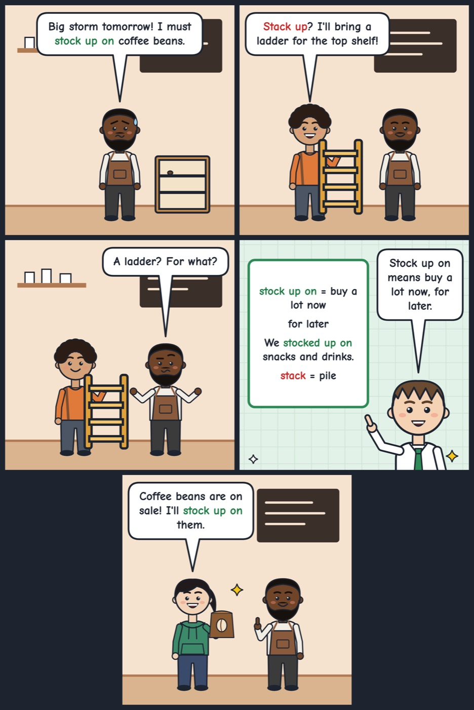

stock up on
To buy a large amount of something so you have enough for later.
Before the long weekend, we stocked up on snacks and drinks.
Tip: Use it with the thing you buy: "stock up on rice" or "stock up on batteries"; it is often said before a trip, a storm, a sale or a busy time.
Hear it in conversation
AmiraAre you coming to the market with me on Saturday?
KofiSure. I need to stock up on coffee before my parents visit.
AmiraHow long are they staying?
KofiTwo weeks, and they drink about six cups a day each.
AmiraThen you'd better buy a big bag. The stall by the entrance has a good deal.
KofiPerfect. I'll get there early before it sells out.
Workbook
1. What does it mean?
In this conversation, what does "stock up on" mean?
2. Fill the gap
The shop has a sale on pasta, so I'm going to it for the next few months.
3. Choose the best reply
Olena: The forecast says it's going to snow all week, and I'm almost out of food.
4. Your turn: speak
Is there anything you like to buy in large amounts, and why?
Show an example answer
I always stock up on notebooks and pens at the start of the school year because they're cheaper then. It also means I never have to run out to the shop in the middle of a busy week.
Answer key: stock up on
- 1. D. Buy a lot of something so you won't run out
- 2. stock up on
- 3. A. You should stock up on groceries today before the roads get bad.
- 4. Example: I always stock up on notebooks and pens at the start of the school year because they're cheaper then. It also means I never have to run out to the shop in the middle of a busy week.
See it in a comic
